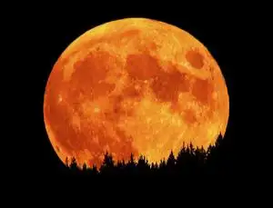

I am too sure what I sam supposed to be writing here but I pasted a nice photo of a sunset that I found on google. To complete this paragraph I pasted some of the constitution. Each House shall be the Judge of the Elections, Returns and Qualifications of its own Members, and a Majority of each shall constitute a Quorum to do Business; but a smaller Number may adjourn from day to day, and may be authorized to compel the Attendance of absent Members, in such Manner, and under such Penalties as each House may provide. Each House may determine the Rules of its Proceedings, punish its Members for disorderly Behaviour, and, with the Concurrence of two thirds, expel a Member.
Each House shall keep a Journal of its Proceedings, and from time to time publish the same, excepting such Parts as may in their Judgment require Secrecy; and the Yeas and Nays of the Members of either House on any question shall, at the Desire of one fifth of those Present, be entered on the Journal.
Neither House, during the Session of Congress, shall, without the Consent of the other, adjourn for more than three days, nor to any other Place than that in which the two Houses shall be sitting.

Once again. Not sure what Im putting here. So I out an explanation what the moon is. Enjoy. The Moon is Earth's only natural satellite. It is the fifth largest satellite in the Solar System and the largest and most massive relative to its parent planet,[f] with a diameter about one-quarter that of Earth (comparable to the width of Australia).[16] The Moon is a planetary-mass object with a differentiated rocky body, making it a satellite planet under the geophysical definitions of the term.[17] It lacks any significant atmosphere, hydrosphere, or magnetic field. Its surface gravity is about one-sixth of Earth's at 0.1654 g, with Jupiter's moon Io being the only satellite in the Solar System known to have a higher surface gravity and density.
Orbiting Earth at an average distance of 384,400 km (238,900 mi), or about 30 times Earth's diameter, its gravitational influence very slowly lengthens Earth's day and is the main driver of Earth's tides. The Moon's orbit around Earth has a sidereal period of 27.3 days. During each synodic period of 29.5 days, the amount of visible surface illuminated by the Sun varies from none up to 100%, resulting in lunar phases that form the basis for the months of a lunar calendar. The Moon is tidally locked to Earth, which means that the length of a full rotation of the Moon on its own axis causes its same side (the near side) to always face Earth, and the somewhat longer lunar day is the same as the synodic period. However, 59% of the total lunar surface can be seen from Earth through shifts in perspective due to libration.
.png)